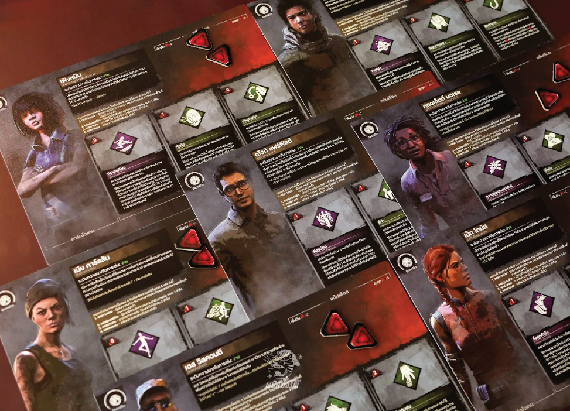
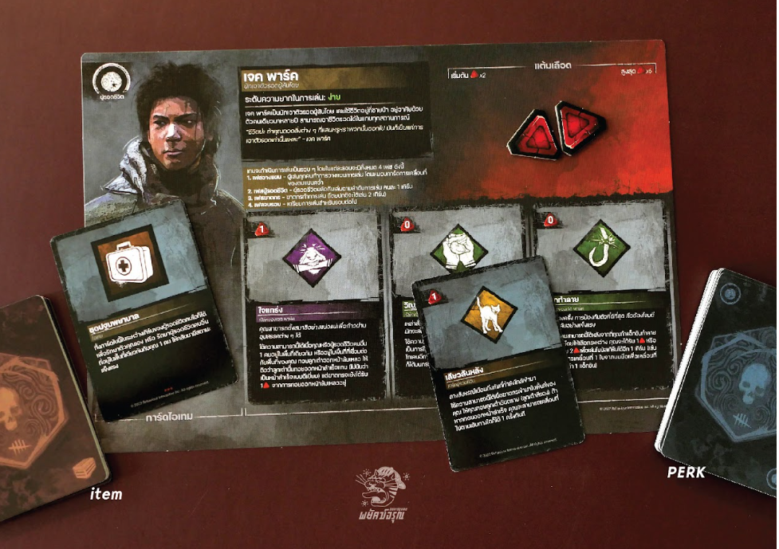
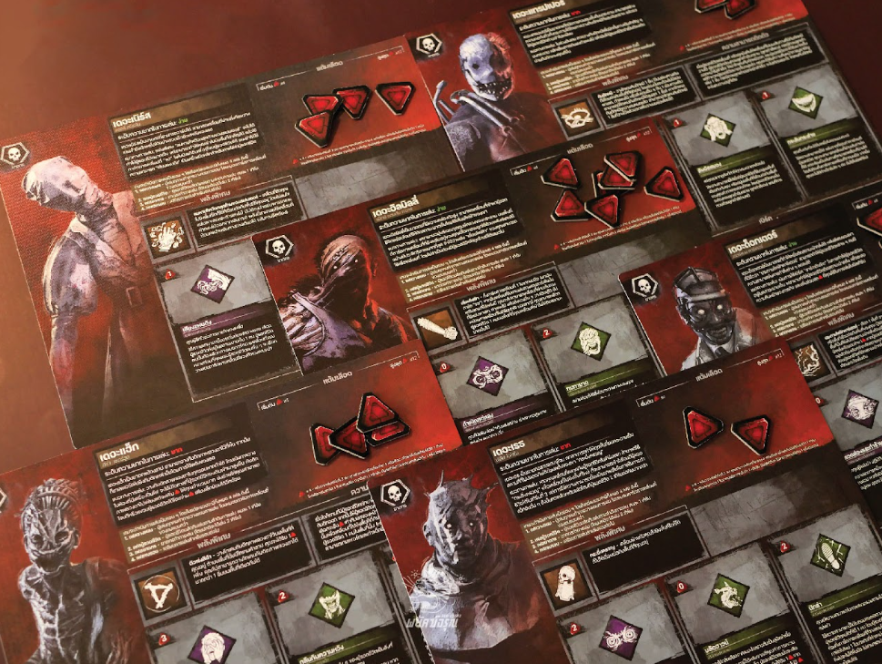
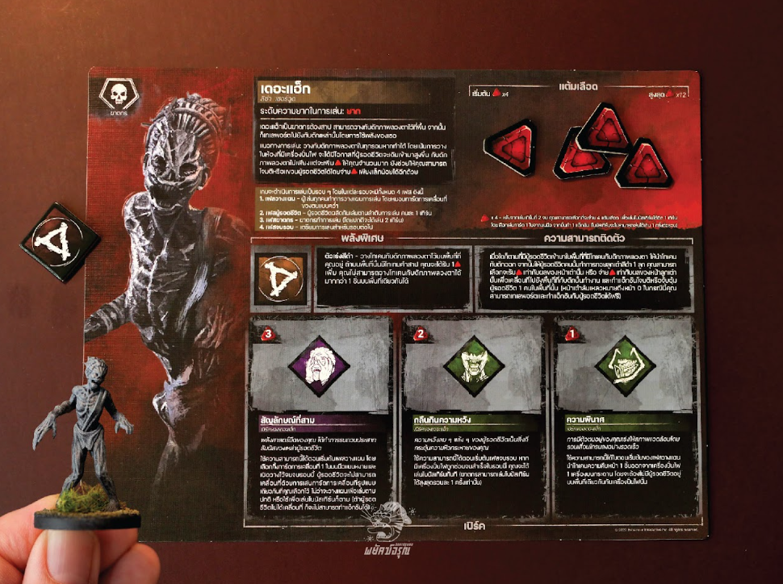
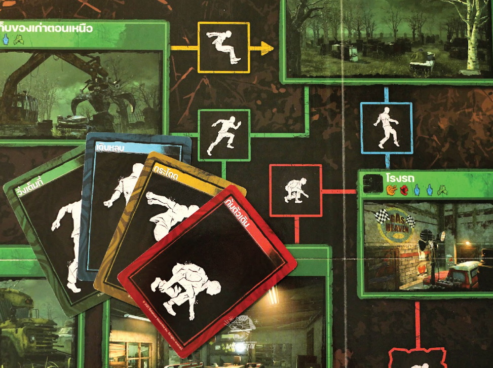
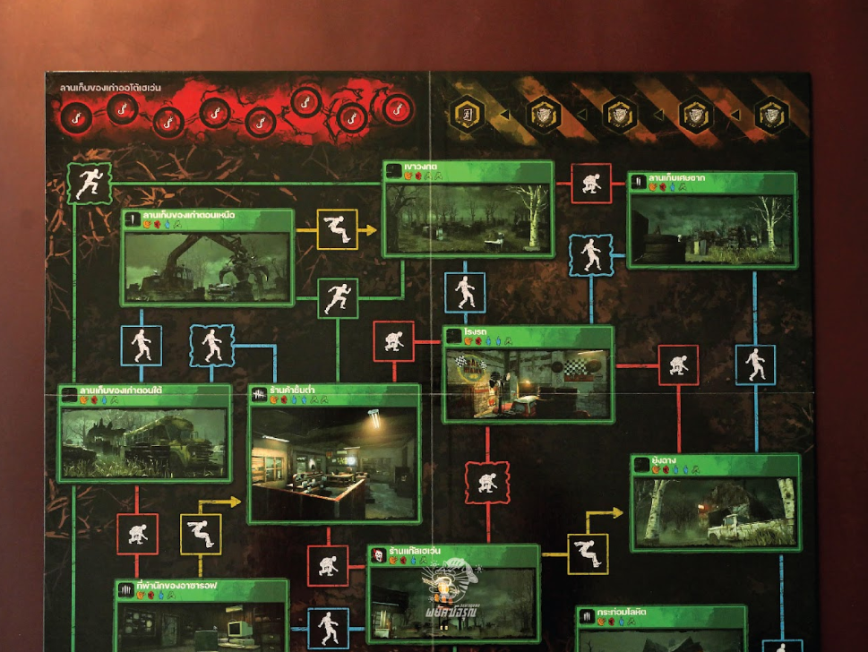
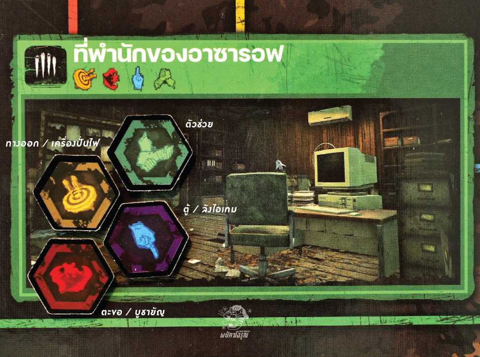

Each player takes their character identity board, which includes name and difficulty level. Turn reference and blood point pool are also set: Survivors start at 2 (max 6), Killers start at 4 (max 12). Perks include name, blood point cost, condition text, and effect.
 Killers have unique special powers; some also have passive abilities that activate throughout the game.
 Place a sacrifice progress token on each Survivor identity board. Give one Survivor the First Player marker. Each player takes a set of movement cards including Sneak, Sprint, Crouch, and Vault. The Killer also takes an additional Wait card.
Select the map for the trial: MacMillan Estates or Autohaven Wreckers.
Shuffle the props and place them face down on the board in designated rooms. Props come in four types: Objective, Boldness, Survival, and Altruism. Each player rolls the skill check dice and places their figure in the matching space in turn order. Survivors reveal one prop of their choice. Place breakable walls on paths with distressed borders. Shuffle the item cards and place them in a face-down draw deck. Create a supply of tokens and dice nearby.
